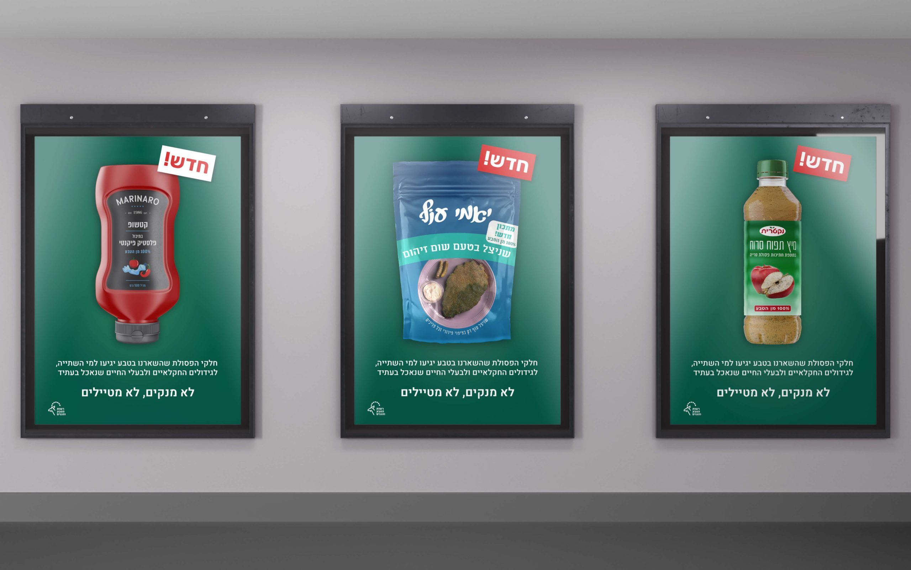
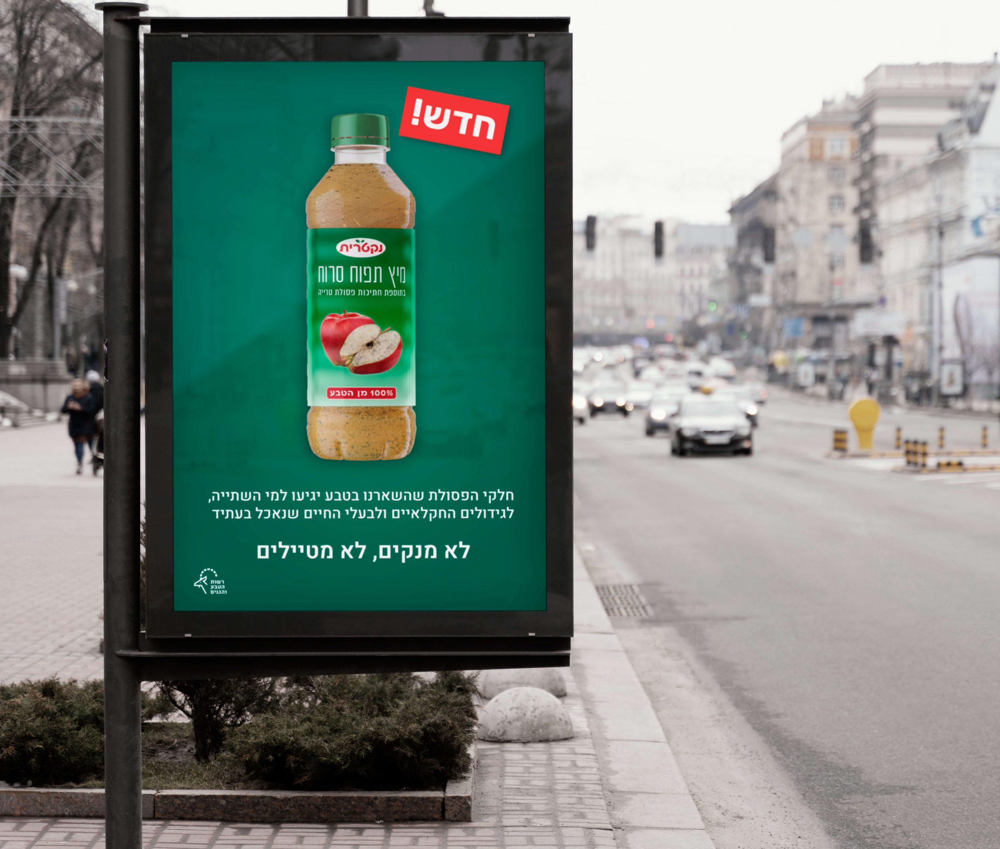
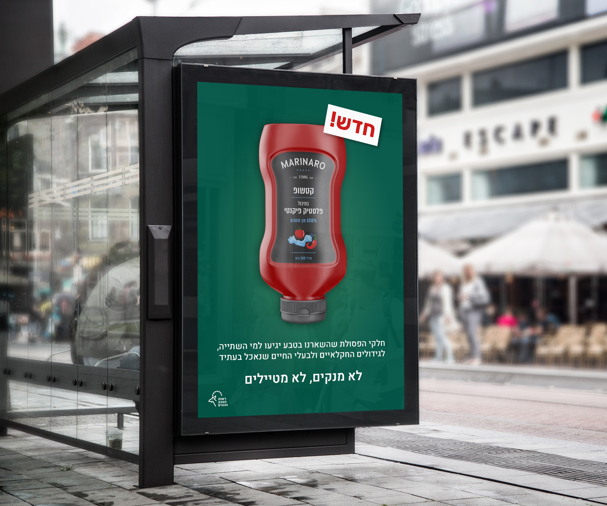
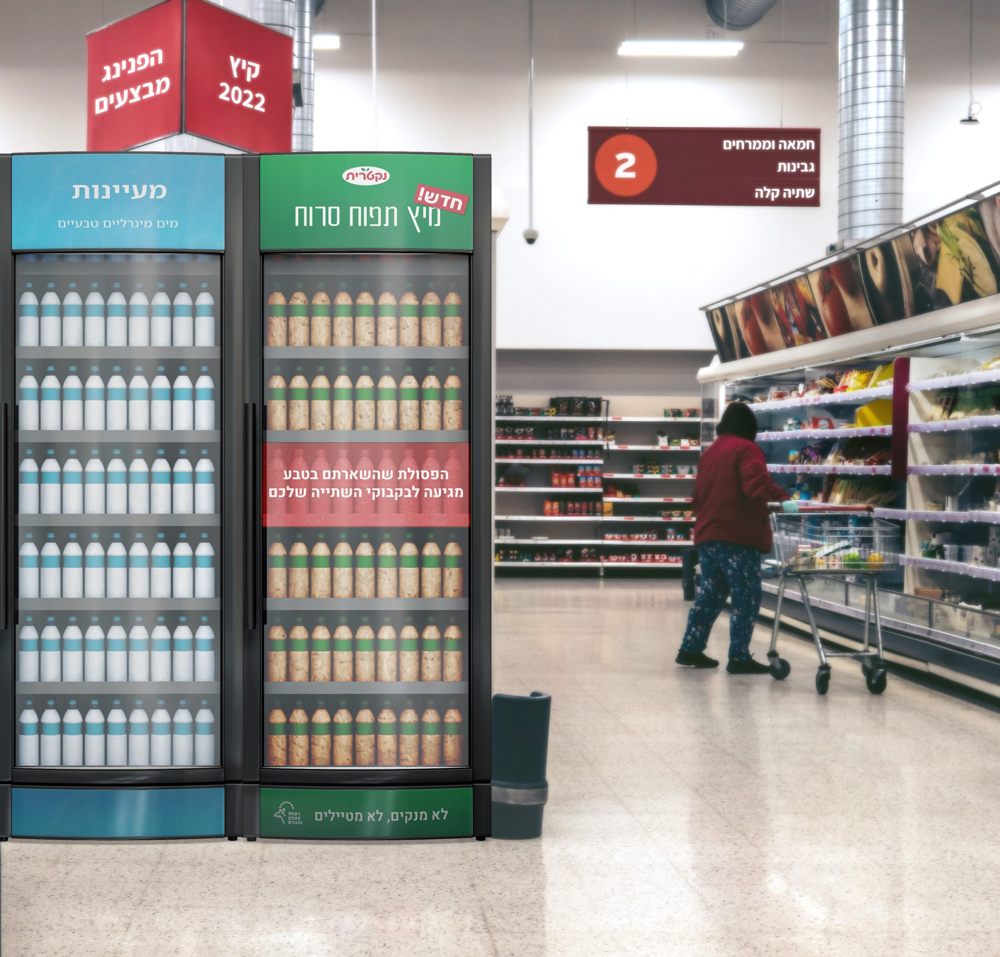
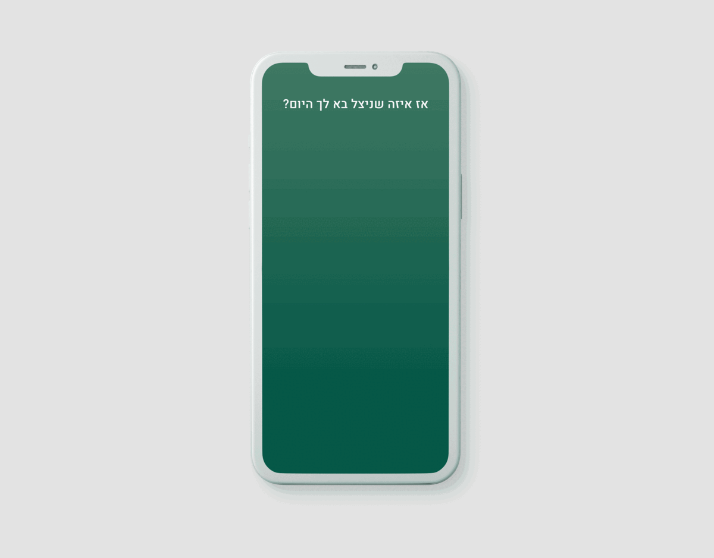
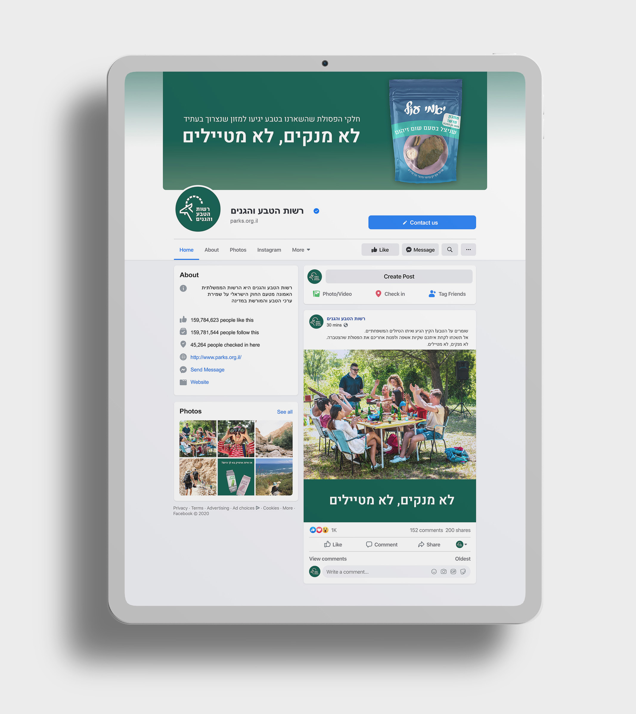
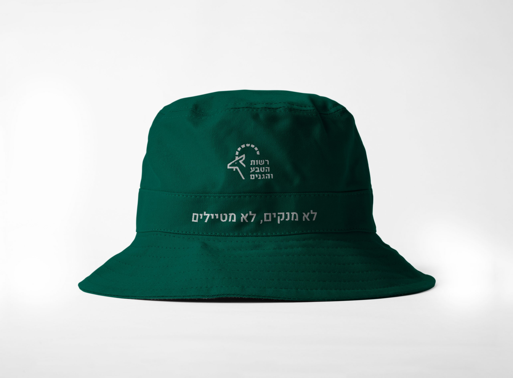

Climate Crisis Campaign
Climate crisis advertising project I created during my studies, aiming to reduce waste created amongst hikers. The leftover waste seeps into the ground and contaminates the water reserves, which eventually leads to polluted food and drinking water.
The campaign presents a series of new food products inspired by familiar Israeli dishes, with a twist. The beloved and familiar flavors are replaced with plastic, pollution and rot.






